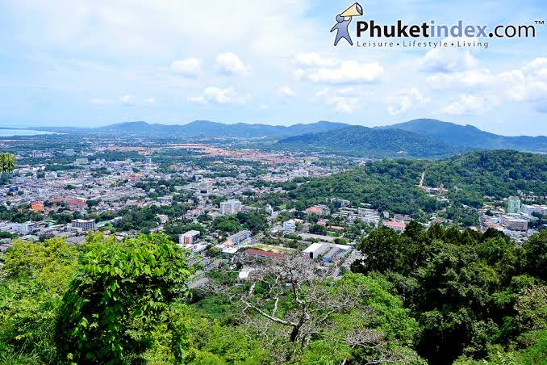

วัดฉลอง

วัดฉลอง

เป็นวัดที่เก่าแก่และมีความเป็นมาอย่างยาวนาน โดยไม่มีหลักฐานที่แน่ชัดว่าวัดแห่งนี้สร้างขึ้นเมื่อไหร่ แต่มีชื่อของวัดฉลอง ปรากฏอยู่ในบันทึกของรัชกาลที่ 3 นั่นเองค่ะ โดยต่อมาในสมัยรัชกาลที่ 5 พระบาทสมเด็จพระจุลจอมเกล้าเจ้าอยู่หัว ทรงเปลี่ยนชื่อวัดฉลองเป็น "วัดไชยธาราราม"
พระอุโบสถของวัดฉลอง แต่เดิมตามประวัติเล่าว่าชาวบ้านได้ช่วยกันขุดสระขึ้นมา แล้วสร้างอาคารเป็นอุโบสถขึ้นกลางสระน้ำ ต่อมาได้มีการสร้างพระอุโบสถใหม่ โดยหลังปัจจุบันสร้างแบบสถาปัตยกรรมสมัยใหม่สมัยรัตนโกสินทร์ที่สวยงาม
หลวงพ่อแช่ม วัดฉลอง ว่ากันว่า ถ้าได้มาถึงภูเก็ต ต้องไม่พลาดแวะไปสักการะ หลวงพ่อแช่ม วัดฉลอง หรือ พระครูวิสุทธิวงศาจารย์ญาณมุณี พระเกจิชื่อดังที่ชาวภูเก็ตให้ความเคารพนับถือ ในเรื่องของการรักษาโรค และเมตตาธรรม ท่านเป็นพระที่มีศาสตร์วิชาในด้านการปรุงยาสมุนไพร และรักษาโรค เข้าเฝือกผู้ป่วยกระดูกหัก เล่ากันว่าในขณะที่พลวงพ่อแช่มยังมีชีวิตอยู่นั้น มีชาวบ้านมารอปิดทองตามแขนและขาของท่านมากมายราวกับปิดทองพระพุทธรูปอีกเลยทีเดียว